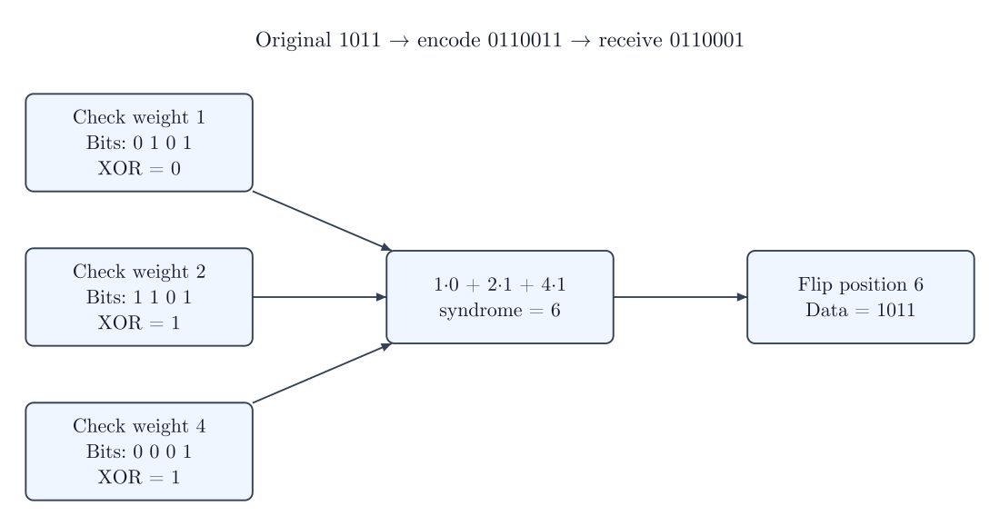
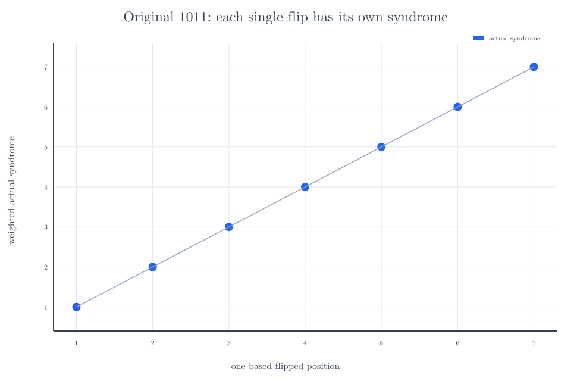
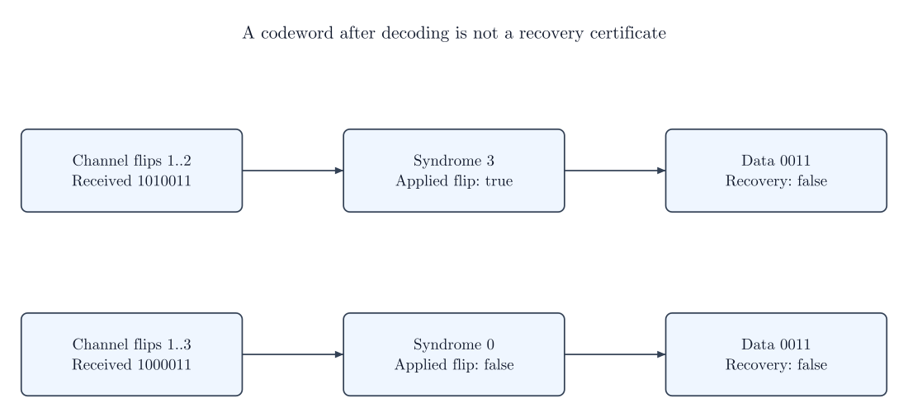
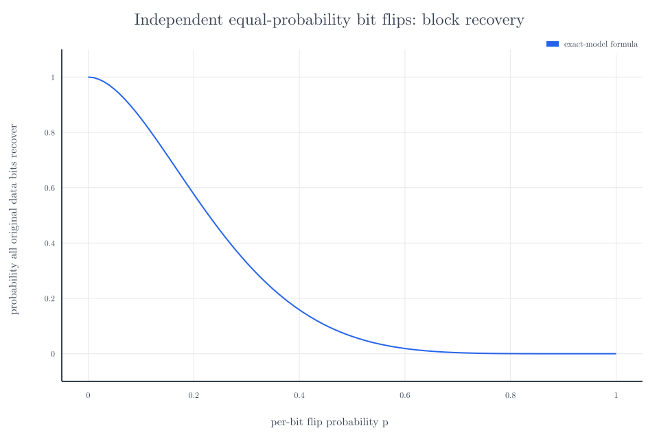

Hamming(7,4): what the syndrome can and cannot tell us
Abstract
Recover four transmitted data bits after a possible bit flip, using three redundant parity bits. A receiver sees only the received word, so it must distinguish a recoverable single error from patterns that imitate another valid message. This report follows actual parity XORs for the original data 1011, verifies every single-error case, and enumerates all binary received words and channel-error masks. It shows why a nonzero syndrome locates a single error under that assumption, why two errors are miscorrected by this decoder, and why a zero syndrome cannot certify an error-free transmission.
Work one actual error through the checks
The original data bits are 1011, in d1,d2,d3,d4 order. Encoding gives 0110011 in one-based positions 1–7: p1,p2,d1,p4,d2,d3,d4. Flip position 6, giving 0110001. The actual checks are 0,1,1 with weights 1, 2, 4, so the syndrome is6. The decoder flips position 6 and extracts the original data.
The following program captures the producing XOR prefixes, rather than recomputing them for a drawing. Prefix 0 is the first bit itself, followed by exactly three XOR updates per check.
#include <dm/dm.hpp>
int main() {
std::filesystem::create_directories("build");
const std::array<int, 4> data{1, 0, 1, 1};
const auto code = dm::algorithms::hamming74_encode(data);
auto received = code;
received[5] ^= 1;
const auto t = dm::algorithms::hamming74_decode_trace(received);
std::print("| check weight | visited positions | actual bits | actual XOR prefixes |\n| ---: | --- | " "--- | --- |\n");
for (int r = 0; r < 3; ++r) {
const auto &q = t.checks[r];
std::print("| {} | {} {} {} {} | {} {} {} {} | {} {} {} {} |\n", 1 << r,
q.positions[0], q.positions[1], q.positions[2],
q.positions[3], q.bits[0], q.bits[1], q.bits[2], q.bits[3],
q.prefix[0], q.prefix[1], q.prefix[2], q.prefix[3]);
}
std::print("\nSyndrome {}; applied flip {}; data recovered {}; parity visits {}; parity XORs {}; data " "reads {}.\n",
t.syndrome, t.decoded.corrected, t.decoded.data == data,
t.work.parity_bit_visits, t.work.parity_xors, t.work.data_reads);
dm::graphics::Diagram d(60, 1100);
dm::graphics::DiagramNodeStyle style;
style.width = 4.4;
style.height = 1.8;
style.font_size = 23;
for (int r = 0; r < 3; ++r) {
const auto &q = t.checks[r];
d.node(std::format("c{}", r), {0, 3. - 3 * r},
std::format("Check weight {}\nBits: {} {} {} {}\nXOR = {}",
1 << r, q.bits[0], q.bits[1], q.bits[2], q.bits[3],
q.prefix[3]), style);
}
d.node("syndrome", {7, 0},
std::format("1·{} + 2·{} + 4·{}\nsyndrome = {}",
t.checks[0].prefix[3], t.checks[1].prefix[3],
t.checks[2].prefix[3], t.syndrome), style).node(
"flip", {14, 0},
std::format("Flip position {}\nData = {}{}{}{}", t.syndrome,
t.decoded.data[0], t.decoded.data[1], t.decoded.data[2],
t.decoded.data[3]), style).edge("c0", "syndrome").edge(
"c1", "syndrome").edge("c2", "syndrome").edge("syndrome", "flip").text(
{7, 5}, "Original 1011 → encode 0110011 → receive 0110001", 25).save_svg("build/hamming_checks.svg");
if (t.syndrome != 6 || t.decoded.data != data || t.corrected_word != code)
throw std::runtime_error("single-error trace");
}| check weight | visited positions | actual bits | actual XOR prefixes |
|---|---|---|---|
| 1 | 1 3 5 7 | 0 1 0 1 | 0 1 1 0 |
| 2 | 2 3 6 7 | 1 1 0 1 | 1 0 0 1 |
| 4 | 4 5 6 7 | 0 0 0 1 | 0 0 0 1 |
Syndrome 6; applied flip true; data recovered true; parity visits 12; parity XORs 9; data reads 4.

Derive the syndrome and the distance guarantee
Use arithmetic modulo two. A parity-check matrix has each nonzero three-bit column exactly once, ordered by the binary position:
Assign d1,d2,d3,d4 to positions 3, 5, 6, 7. Even parity gives
If the channel adds an error vector e, then \(r=c\oplus e\) and \(Hr=He\). A single error at j produces column j. Reading its check outputs with weights 1, 2, 4 gives j itself. For two errors at distinct i and j, the syndrome is the binary XOR \(i\oplus j\), which is nonzero and differs from both i and j. It therefore indicates nonmembership but does not reveal that there were two errors.
There is no weight 1 codeword because H has no zero column, and no weight 2 codeword because its columns are distinct. Columns1,2,3 XOR to zero, giving a weight 3 codeword. The minimum distance is therefore exactly3. Distinct radius-one Hamming balls cannot overlap, and
Thus this code is perfect for one-error correction: every received word is within distance one of exactly one codeword. That uniqueness proves what this decoder selects; it does not prove that the selected word was transmitted. The code rate is4/7, with three redundant bits per four data bits.
Preserve the original seven single-bit checks
First retain the original example: corrupt each position of the encoded 1011 independently, and compare decoded data with the known input. Then use the native exhaustive audit to check all 16 messages, all 112 single-error cases, all 120 codeword pairs and the complete codeword weight enumerator. No random dataset or sampled estimate is needed for this small finite problem.
#include <dm/dm.hpp>
int main() {
std::filesystem::create_directories("build");
const std::array<int, 4> data{1, 0, 1, 1};
const auto code = dm::algorithms::hamming74_encode(data);
std::vector<double> x, y;
std::print("| flipped position | syndrome | applied flip | data recovered |\n| ---: | ---: | --- | --- " "|\n");
for (int pos = 1; pos <= 7; ++pos) {
auto r = code;
r[pos - 1] ^= 1;
const auto t = dm::algorithms::hamming74_decode_trace(r);
std::print("| {} | {} | {} | {} |\n", pos, t.syndrome,
t.decoded.corrected, t.decoded.data == data);
x.push_back(pos);
y.push_back(t.syndrome);
if (t.syndrome != pos || t.decoded.data != data)
throw std::runtime_error("single error");
}
const auto a = dm::algorithms::hamming74_audit();
std::print("\nMinimum distance {}; single-error cases {}; recovered {}; codeword counts by weight0..7:",
a.minimum_distance, a.patterns[1], a.recovered[1]);
for (auto n : a.codeword_weights)
std::print(" {}", n);
std::print(".\n");
auto plot = dm::graphics::RPlot::create();
plot.points(x, y, "actual syndrome", {37, 99, 235}, 7.).line(
x, y, "", {148, 163, 184}, 1.5).title("Original 1011: each single flip has its own syndrome").x_label("one-based flipped position").y_label("weighted actual syndrome").save_svg("build/hamming_single.svg");
if (a.minimum_distance != 3 || a.recovered[1] != 112)
throw std::runtime_error("full code audit");
}| flipped position | syndrome | applied flip | data recovered |
|---|---|---|---|
| 1 | 1 | true | true |
| 2 | 2 | true | true |
| 3 | 3 | true | true |
| 4 | 4 | true | true |
| 5 | 5 | true | true |
| 6 | 6 | true | true |
| 7 | 7 | true | true |
Minimum distance 3; single-error cases 112; recovered 112; codeword counts by weight0..7: 1 0 0 7 7 0 0 1.

Two errors are miscorrected; three can be invisible
Now flip positions 1 and 2 of the original codeword. Syndrome 3 makes the
decoder flip position 3 as well. The result 1000011 is a different valid
codeword carrying 0011. The public field corrected remains true because a flip
was applied; it is not a verified recovery flag.
If the channel instead flips positions 1, 2, 3, the received 1000011 already has
zero syndrome. The decoder leaves it alone and returns 0011. Its corrected
field is false, although data are wrong. There is no universal error-count
classifier hidden in a three-bit syndrome.
#include <dm/dm.hpp>
int main() {
std::filesystem::create_directories("build");
const std::array<int, 4> data{1, 0, 1, 1};
const auto code = dm::algorithms::hamming74_encode(data);
dm::graphics::Diagram d(65, 1100);
dm::graphics::DiagramNodeStyle style;
style.width = 4.8;
style.height = 1.8;
style.font_size = 22;
std::print("| flipped positions | syndrome | applied flip | returned data | recovered |\n| --- | ---: | " "--- | --- | --- |\n");
for (int errors = 2; errors <= 3; ++errors) {
auto r = code;
for (int j = 0; j < errors; ++j)
r[j] ^= 1;
const auto t = dm::algorithms::hamming74_decode_trace(r);
const auto &v = t.decoded.data;
std::print("| 1..{} | {} | {} | {}{}{}{} | {} |\n", errors, t.syndrome,
t.decoded.corrected, v[0], v[1], v[2], v[3], v == data);
const double y = errors == 2 ? 2. : -2.;
const auto id = std::to_string(errors);
d.node("in" + id, {0, y},
std::format("Channel flips 1..{}\nReceived {}{}{}{}{}{}{}",
errors, r[0], r[1], r[2], r[3], r[4], r[5], r[6]),
style).node("s" + id, {7, y},
std::format("Syndrome {}\nApplied flip: {}",
t.syndrome, t.decoded.corrected), style).node("out" + id, {14, y}, std::format("Data {}{}{}{}\nRecovery: {}", v[0], v[1], v[2], v[3], v == data), style).edge("in" + id, "s" + id).edge("s" + id, "out" + id);
if (v == data ||
dm::algorithms::hamming74_syndrome(t.corrected_word) != 0)
throw std::runtime_error("miscorrection controls");
}
d.text({7, 5}, "A codeword after decoding is not a recovery certificate", 25).save_svg("build/hamming_limits.svg");
}| flipped positions | syndrome | applied flip | returned data | recovered |
|---|---|---|---|---|
| 1..2 | 3 | true | 0011 | false |
| 1..3 | 0 | false | 0011 | false |

Hamming(7,4) can detect any two errors if a nonzero syndrome is treated as a rejection. This library interface instead always applies its one-error correction rule. Simultaneously distinguishing single errors to correct from double errors to reject requires more information. Adding an overall parity bit yields an extended distance 4 code with such a policy, often called SECDED; that eight-bit codec is not implemented or simulated here.
Complete channel audit, then a stated probability model
The following table enumerates every transmitted word and every one of 128 binary error masks: 2048 cases. Weight is the number of flipped channel positions, not the weight of the received word. No mask of weight 2 or greater recovers the original data under this decoder: its output equals the original codeword only when the received word is that codeword or one of its radius-one neighbours.
#include <dm/dm.hpp>
int main() {
std::filesystem::create_directories("build");
const std::array<int, 4> data{1, 0, 1, 1};
const auto code = dm::algorithms::hamming74_encode(data);
const auto a = dm::algorithms::hamming74_audit();
std::print("| error weight | word-mask pairs | nonzero syndromes | original data recovered |\n| ---: | " "---: | ---: | ---: |\n");
for (int w = 0; w <= 7; ++w) {
std::print("| {} | {} | {} | {} |\n", w, a.patterns[w],
a.nonzero_syndromes[w], a.recovered[w]);
if (a.recovered[w] != (w <= 1 ? a.patterns[w] : 0))
throw std::runtime_error("weight recovery");
}
std::vector<double> p, recovery;
for (int j = 0; j <= 100; ++j) {
const double v = j / 100.;
p.push_back(v);
recovery.push_back(dm::algorithms::hamming74_bsc_recovery(v));
}
std::print("\nIndependent BSC model at p=0.1: block recovery {:.7f}; p=0 recovery {}; p=1 recovery " "{}.\n",
dm::algorithms::hamming74_bsc_recovery(.1),
dm::algorithms::hamming74_bsc_recovery(0),
dm::algorithms::hamming74_bsc_recovery(1));
auto plot = dm::graphics::RPlot::create();
plot.line(p, recovery, "exact-model formula", {37, 99, 235}, 2.).title(
"Independent equal-probability bit flips: block recovery").x_label(
"per-bit flip probability p").y_label("probability all original data bits recover").save_svg("build/hamming_channel.svg");
}| error weight | word-mask pairs | nonzero syndromes | original data recovered |
|---|---|---|---|
| 0 | 16 | 0 | 16 |
| 1 | 112 | 112 | 112 |
| 2 | 336 | 336 | 0 |
| 3 | 560 | 448 | 0 |
| 4 | 560 | 448 | 0 |
| 5 | 336 | 336 | 0 |
| 6 | 112 | 112 | 0 |
| 7 | 16 | 0 | 0 |
Independent BSC model at p=0.1: block recovery 0.8503056; p=0 recovery 1; p=1 recovery 0.

If seven bits flip independently with equal probability p, exact block recovery is the event of zero or one flips:
The curve evaluates this formula in double precision. It is not a confidence interval or a claim about correlated, bursty or unequal hardware errors. At p=0.1 it gives 0.8503056. Finite enumeration validates which patterns recover; independence and equal p are additional model assumptions.
The full codeword weight enumerator is
These are also the zero-syndrome error shapes, since H(c XOR e)=He. For example, among weight 3 errors,7 of 35 shapes are invisible to the syndrome. The other 28 give a nonzero syndrome and a miscorrection. None recovers the original data.
Contracts, work and conclusions
All encoder, syndrome and decoder entries require array components exactly 0 or 1 and reject nonbinary values before correction indexing. The old decoder could otherwise use an invalid computed syndrome as an array index. Valid binary outputs and the three legacy decoded fields are preserved. Input arrays are never mutated at the caller; trace arrays own their values, copy independently and retain no references. Calls share no mutable state.
Encoding uses six parity XORs. Decoding's selected actual work is twelve parity input visits, nine parity XORs, zero or one correction flips and four data reads. Validation, weighted-syndrome assembly, snapshots, memory traffic and machine operations are outside these selected counts. This fixed code needs constant work and storage, with no heap or optional history cap; streaming B independent blocks requires O(B) codec work, excluding external framing, transmission and allocation costs. The exhaustive audit has fixed bounds of 16 words, 120 pairs and 2048 decodings, rather than an unbounded search interface.
The syndrome is powerful because distinct single errors have distinct check patterns. The same perfect packing makes every received word look close to some codeword, so an always-correct decoder cannot also certify recovery under unrestricted noise. The original example proves its intended one-error behavior; the complete audit and explicit counterexamples delimit that guarantee. An unrelated dataset would add no evidence to this finite binary question.
The primary reference is R. W. Hamming (1950), [Error Detecting and Error Correcting Codes](https://doi.org/10.1002/j.1538-7305.1950.tb00463.x), Bell System Technical Journal 29, 147–160. Section 3 gives the checking-number construction and power-of-two parity positions; section 4 distinguishes single correction plus double detection with extra parity. This report uses that position convention and the library's explicitly limited seven-bit decoder.
Verification checks all binary received words against an independently enumerated parity-check codebook and unique nearest codeword, checks every word/error-mask pair, and compares valid legacy outputs. Sanitizers cover nonbinary rejection, ownership and actual XOR records. API examples, language-server descriptions, all complete programs, inspected figures and both exports are verified before the original report is retired.